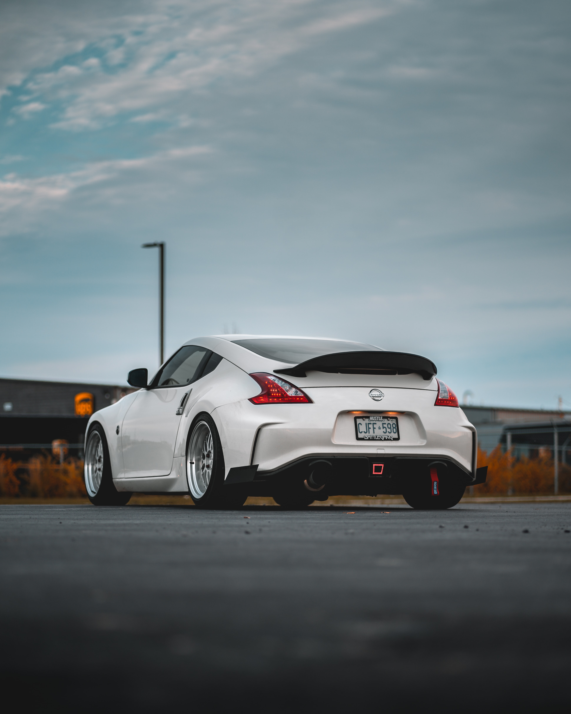

О нас
В 1976 году, благодаря собственному флоту, Nissan стал крупнейшим экспортёром автомобилей в мире, а в следующем году совокупное количество проданных автомобилей (за все годы функционирования) перешагнуло 20 миллионов. В 1981 году корпорация подписала соглашение с Volkswagen о производстве и продаже легковых автомобилей в Японии. В 1992 году на долю Ниссана приходилось 17 % автомобилей, принадлежащих японскому населению